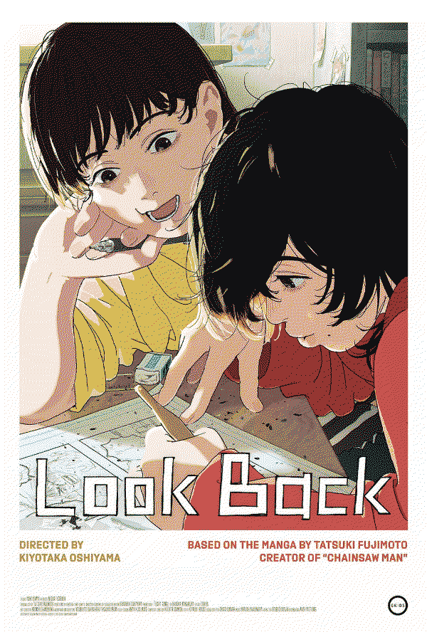
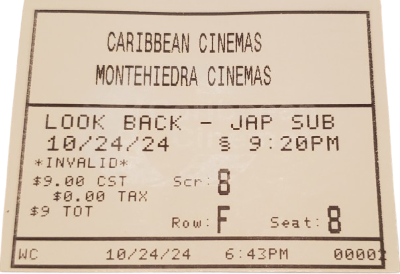
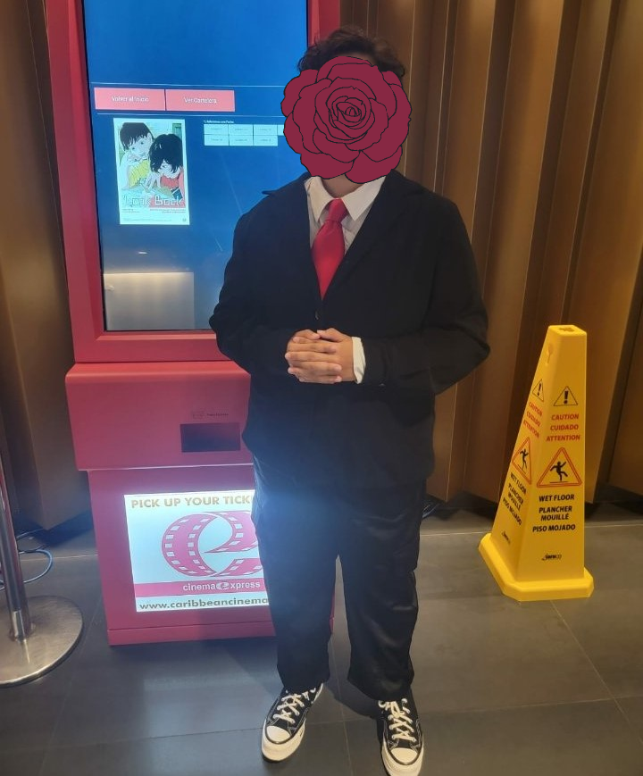

happy halloween everyone!!! this october has been so exciting for me!!! something i've been looking forward to since going to back to university were the halloween activities people do around october. since june of this year i had already in mind what i wanted to be for this coming halloween. it's not anything scary... it's just... FREAKING MIKU!!!!!
i've always wanted to dress up as something siinamota related and i thought award strobe hello miku would be such a perfect version of miku to dress up as. i love the suit and tie with the frilly skirt and the broken socks. i honestly love it so much! i actually got most of this outfit thrifted. the only thing i had to get online was the wig of course. a very cheap plastic miku wig but HEY it does the job. during my free time these coming days i gotta detangle it.
inspired by the award strobe hello by siinamota album cover. illustration by meisa. album scan
i've already worn this costume two times! i had a costume party a few days ago hosted by a friend of mine. there was gonna be a prize at the end for the best costume. and i guess people LOVE miku because i won?!?! and i got SUCH a sick af trophy too because of it too!
i also got to wear the miku fit yesterday (there's no class today :( ) for my uni class! taking the train with a full on wig and just overall costume (at 8am MIND YOU) was so so so funny... so yes i took my precalculus class as miku. if anything i felt a little bit smarter. classmates loved my outfit and even the professor asked me what i was dressed as. i showed him a pic of the album cover and he went how cool!. i love that professor.
on another note, i have been seriously lacking in the watching-horror-movies-during-october department. i love love love watching *mostly* horror movies throughout this month, but due to me having actual responsibilities and my lack of multi-tasking, i haven't been able to watch that many as i usually do. i have a few days free from school and work due to elections, so i'm hoping to catch up on some of those films these coming days.
mizu meow meow's birthday was also during this month. my baby is now 14 years old! i hope he's having a chill af day doing nothing but sleeping. i will probably do the same in a bit.
last thing i ate was a vanilla oreo and caramel ice cream
look back25.oct.24

ever since the look back movie got announced, i have been YEARNING to watch it. after a very painful month of waiting for it to be released in Puerto Rico, it finally premiered yesterday on the island.
the entire time i was watching this movie, i was just in AWE.... it felt like a dream. there was so much charm and love put into this. i wanted to cry just out of happiness during the first 10 minutes of this movie. i loved how the character had rougher lines while the background just looked so clean and beautiful. it's such a nice little detail that represents fujino and kyomoto's art style so well. having read the one shot some time around 2022, i knew exactly where this movie was gonna go the entire time. and yet i couldn't help but sob for like a good half of the movie. watching this just felt so magical. i absolutely love every single second of this movie. the music was also so so so good and it really added to key moments of the film. i was so emotional when the movie ended... what a beautiful piece of media.

i went to the theater in a suit to commemorate the very special occasion of having look back premiere in PR. i was hoping to take a picture next to the poster, because you know, theaters USUALLY have posters displaying the films they are screening. sadly my theater did not have a poster up for look back... possibly to the fact that it got a bit of a limited??? release in PR. since out of the 30 theaters in PR it only premiered in 2. nonetheless, i ended up taking a pic with the ticket machine that displayed a mini version of the poster while choosing the tickets.

you know i had to do it to them.
i think it's safe to say that this might be the best movie i have ever watched in my life.
P.S. if you haven't watched look back if will be available on amazon prime on november 07! and i highly recommend you read it as well. this was the first work of tatsuki fujimoto that i read and it was what got me into his other works like chainsaw man and goodbye eri!


 and i got SUCH a sick af trophy too because of it too!
and i got SUCH a sick af trophy too because of it too!